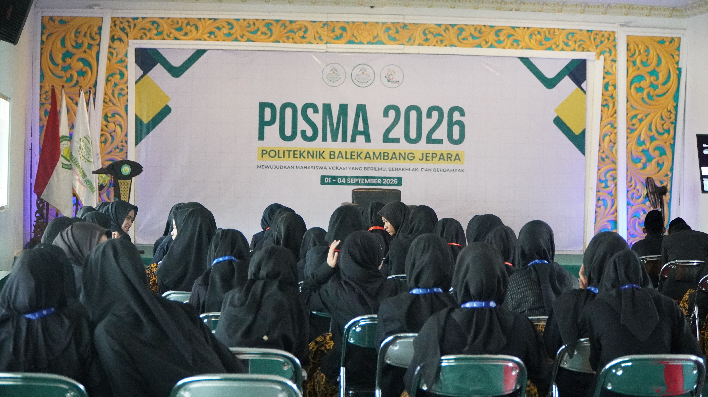

Beranda | Tentang Saya | Portofolio | Kontak
Halo, nama saya Abdullah Wafi. Saya lahir dan besar di Jepara dan sangat tertarik dengan dunia teknologi sejak sekolah menengah.
Saya senang mempelajari hal baru, terutama yang berkaitan dengan pemrograman dan desain antarmuka.
2019 - 2021: Mts Kedungombo
2021 - 2024: SMA Negeri 1 Nalumsari, Jurusan IPS
2024 - Sekarang: Program Studi Rekayasa Perangkat Lunak
Selama kuliah saya mempelajari dasar algoritma, basis data, dan pemrograman web.
Hobi saya adalah membaca artikel teknologi, dan menonton video tutorial pemrograman.
Referensi belajar favorit saya: MDN Web Docs dan W3Schools.

Saya aktif mengikuti kegiatan himpunan mahasiswa dan pernah menjadi panitia posma.
Kegiatan tersebut melatih kemampuan kerja sama tim dan komunikasi saya.